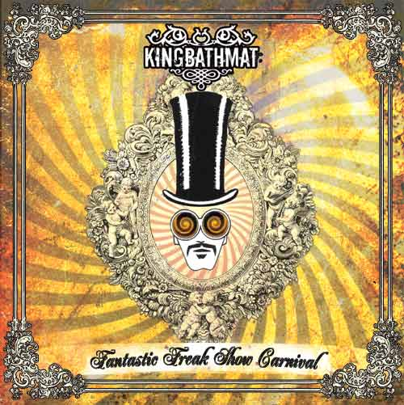

| Artist: | Kingbathmat |
| Title: | Fantastic Freak Show Carnival |
| Label: | King Bathmat KINGBCD003 |
| Length(s): | 46 minutes |
| Year(s) of release: | 2005 |
| Month of review: | [11/2005] |
| 1) | Ghost In The Fire | 4.31 |
| 2) | Fantastic Freak Show Carnival | 3.58 |
| 3) | Rejected | 3.04 |
| 4) | Kings Ransom | 3.17 |
| 5) | Hornets Nest | 1.24 |
| 6) | Sweet Iris | 4.55 |
| 7) | Simpleton Know It All | 3.18 |
| 8) | Illuminous Pups | 3.26 |
| 9) | Wonderful Life | 4.57 |
| 10) | Interval | 1.36 |
| 11) | Soul Searching Song | 11.27 |
The title track leads us to where Kingbathmat operates most: the field of melodic alternative rock with a slightly progressive edge to it. The rhythms are very much alternative, as are most of the guitar lines and the style of the backing vox. The only exception being Bassett's vocals, which are of a more melodic type, conjuring up images of melodically oriented progressive bands such as RPWL (to name one).
Still, the band does throw in the odd effect, making this disc the more versatile than those of most alternative bands. Hornets Nest is an almost psychedelic guitar rendition of the sound of a Hornets Nest (or so I presume the intention would be). Sweet Iris is, as the title would suggest, a ballad, albeit one with a twist. Simpleton Know It All is a bit plain instrumentally, but the vocal melody takes it where it should be. Illuminous Pups comes in the guise of a friendly instrumental but suddenly ignites into fierce and swirling guitar.
Wonderful life is another melodic alt track, followed by the instrumental Interval setting up for the epic finale. Soul Searching Song, although it harbours a vocal section, I would not really call a song, since it begins with a lengthy psychedelic guitar section, akin to Loop, to which we return after the vocal bit.